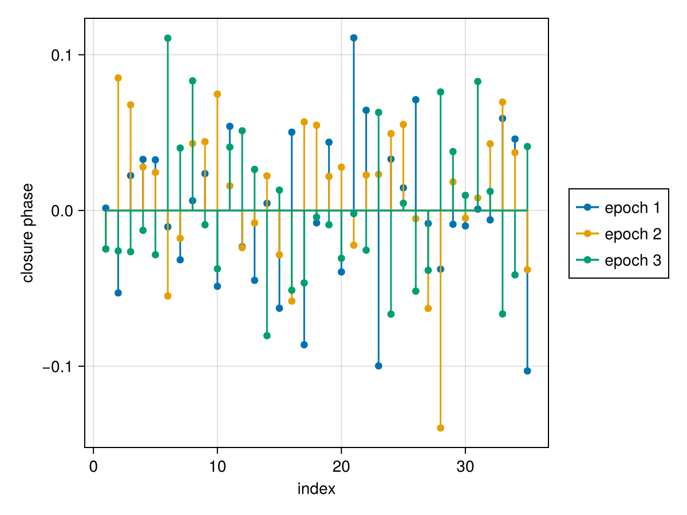
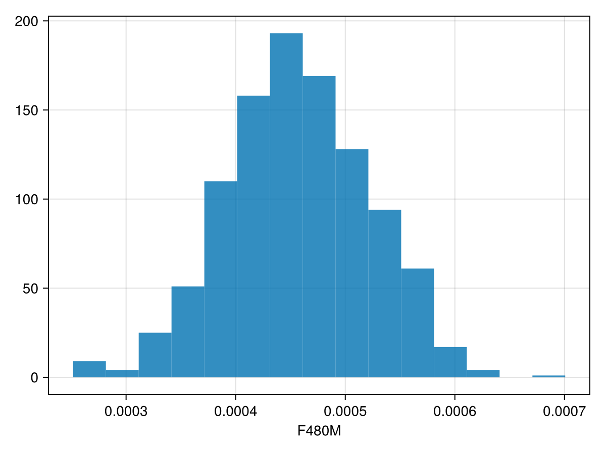
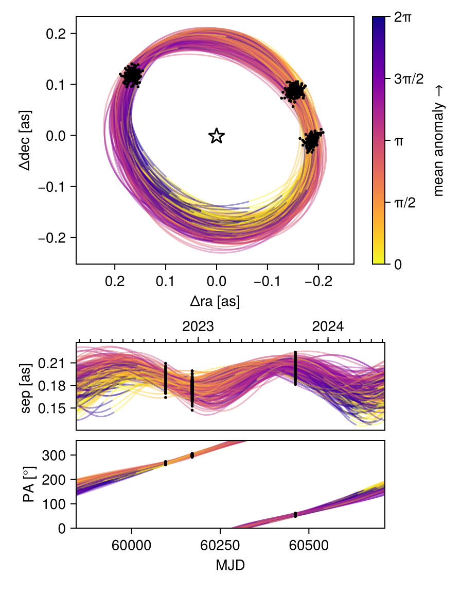
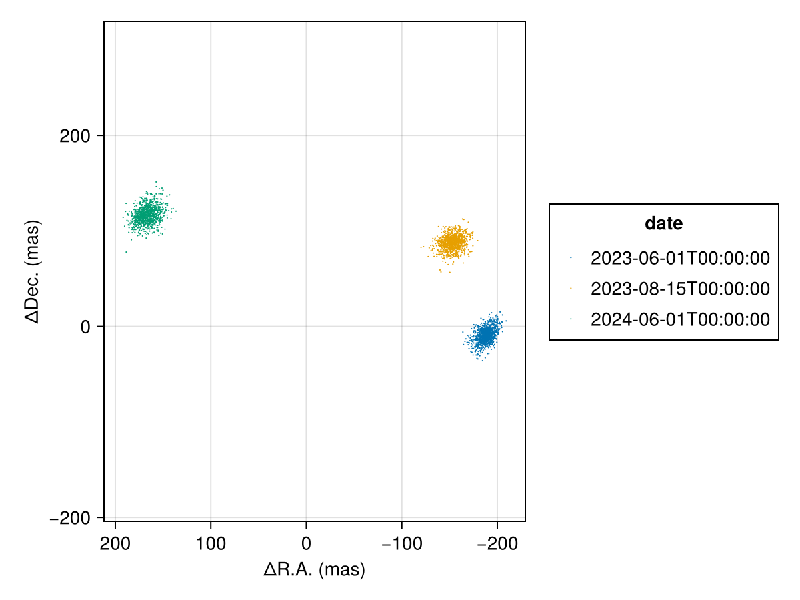
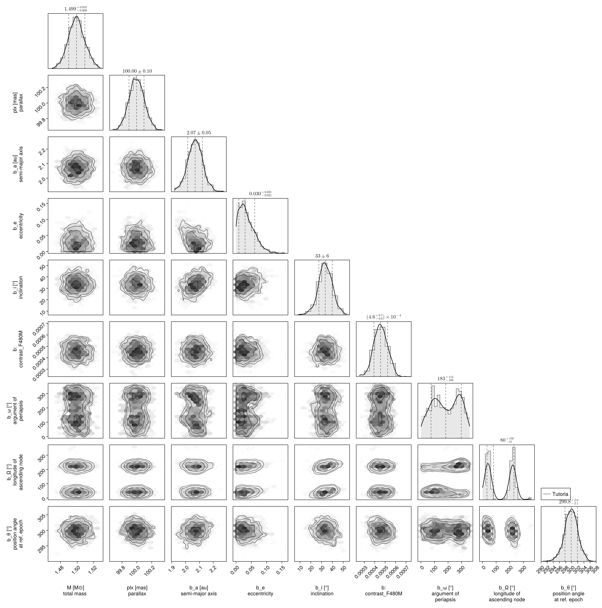

Fitting Interferometric Observables
In this tutorial, we fit a planet & orbit model to a sequence of interferometric observations. Closure phases and squared visibilities are supported.
We load the observations in OI-FITS format and model them as a point source orbiting a star.
Interferometer modelling is supported in Octofitter via the extension package OctofitterInterferometry. To install it, run pkg> add http://github.com/sefffal/Octofitter.jl:OctofitterInterferometry
using Octofitter
using OctofitterInterferometry
using Distributions
using CairoMakie
using PairPlots┌ Warning: Module Octofitter with build ID fafbfcfd-1167-d482-0000-004180c05df0 is missing from the cache.
│ This may mean Octofitter [daf3887e-d01a-44a1-9d7e-98f15c5d69c9] does not support precompilation but is imported by a module that does.
└ @ Base loading.jl:1948Download simulated JWST AMI observations from our examples folder on GitHub:
download("https://github.com/sefffal/Octofitter.jl/raw/main/examples/AMI_data/Sim_data_2023_1_.oifits", "Sim_data_2023_1_.oifits")
download("https://github.com/sefffal/Octofitter.jl/raw/main/examples/AMI_data/Sim_data_2023_2_.oifits", "Sim_data_2023_2_.oifits")
download("https://github.com/sefffal/Octofitter.jl/raw/main/examples/AMI_data/Sim_data_2024_1_.oifits", "Sim_data_2024_1_.oifits")"Sim_data_2024_1_.oifits"Create the likelihood object:
vis_like = InterferometryLikelihood(
(; filename="Sim_data_2023_1_.oifits", epoch=mjd("2023-06-01"), spectrum_var=:contrast_F480M, use_vis2=false),
(; filename="Sim_data_2023_2_.oifits", epoch=mjd("2023-08-15"), spectrum_var=:contrast_F480M, use_vis2=false),
(; filename="Sim_data_2024_1_.oifits", epoch=mjd("2024-06-01"), spectrum_var=:contrast_F480M, use_vis2=false),
)OctofitterInterferometry.InterferometryLikelihood Table with 14 columns and 3 rows:
filename epoch spectrum_var use_vis2 ⋯
┌───────────────────────────────────────────────────────────
1 │ Sim_data_2023_1_.oi… 60096.0 contrast_F480M false ⋯
2 │ Sim_data_2023_2_.oi… 60171.0 contrast_F480M false ⋯
3 │ Sim_data_2024_1_.oi… 60462.0 contrast_F480M false ⋯Plot the closure phases:
fig = Makie.Figure()
ax = Axis(
fig[1,1],
xlabel="index",
ylabel="closure phase",
)
Makie.stem!(
vis_like.table.cps_data[1][:],
label="epoch 1",
)
Makie.stem!(
vis_like.table.cps_data[2][:],
label="epoch 2"
)
Makie.stem!(
vis_like.table.cps_data[3][:],
label="epoch 3"
)
Makie.Legend(fig[1,2], ax)
fig
@planet b Visual{KepOrbit} begin
a ~ truncated(Normal(2,0.1), lower=0)
e ~ truncated(Normal(0, 0.05),lower=0, upper=0.90)
i ~ Sine()
ω ~ UniformCircular()
Ω ~ UniformCircular()
# Our prior on the planet's photometry
# 0 +- 10% of stars brightness (assuming this is unit of data files)
contrast_F480M ~ truncated(Normal(0, 0.1),lower=0)
θ ~ UniformCircular()
tp = θ_at_epoch_to_tperi(system,b,60171) # reference epoch for θ. Choose an MJD date near your data.
end
@system Tutoria begin
M ~ truncated(Normal(1.5, 0.01), lower=0)
plx ~ truncated(Normal(100., 0.1), lower=0)
end vis_like bSystem model Tutoria
Derived:
Priors:
M Truncated(Distributions.Normal{Float64}(μ=1.5, σ=0.01); lower=0.0)
plx Truncated(Distributions.Normal{Float64}(μ=100.0, σ=0.1); lower=0.0)
Planet b
Derived:
ω, Ω, θ, tp,
Priors:
a Truncated(Distributions.Normal{Float64}(μ=2.0, σ=0.1); lower=0.0)
e Truncated(Distributions.Normal{Float64}(μ=0.0, σ=0.05); lower=0.0, upper=0.9)
i Sine()
ωy Distributions.Normal{Float64}(μ=0.0, σ=1.0)
ωx Distributions.Normal{Float64}(μ=0.0, σ=1.0)
Ωy Distributions.Normal{Float64}(μ=0.0, σ=1.0)
Ωx Distributions.Normal{Float64}(μ=0.0, σ=1.0)
contrast_F480M Truncated(Distributions.Normal{Float64}(μ=0.0, σ=0.1); lower=0.0)
θy Distributions.Normal{Float64}(μ=0.0, σ=1.0)
θx Distributions.Normal{Float64}(μ=0.0, σ=1.0)
Octofitter.UnitLengthPrior{:ωy, :ωx}: √(ωy^2+ωx^2) ~ LogNormal(log(1), 0.02)
Octofitter.UnitLengthPrior{:Ωy, :Ωx}: √(Ωy^2+Ωx^2) ~ LogNormal(log(1), 0.02)
Octofitter.UnitLengthPrior{:θy, :θx}: √(θy^2+θx^2) ~ LogNormal(log(1), 0.02)
OctofitterInterferometry.InterferometryLikelihood Table with 14 columns and 3 rows:
filename epoch spectrum_var use_vis2 ⋯
┌───────────────────────────────────────────────────────────
1 │ Sim_data_2023_1_.oi… 60096.0 contrast_F480M false ⋯
2 │ Sim_data_2023_2_.oi… 60171.0 contrast_F480M false ⋯
3 │ Sim_data_2024_1_.oi… 60462.0 contrast_F480M false ⋯
Create the model object and run octofit_pigeons:
model = Octofitter.LogDensityModel(Tutoria)
using Pigeons
results,pt = octofit_pigeons(model, n_rounds=10);[ Info: Sampler running with multiple threads : true
[ Info: Likelihood evaluated with multiple threads: false
[ Info: Determining initial positions and metric using pathfinder
┌ Info: Found a sample of initial positions
└ initial_logpost_range = (160.16621029386428, 176.99448981072166)
────────────────────────────────────────────────────────────────────────────────────────────────────────────────────────
scans restarts Λ Λ_var time(s) allc(B) log(Z₁/Z₀) min(α) mean(α) min(αₑ) mean(αₑ)
────────── ────────── ────────── ────────── ────────── ────────── ────────── ────────── ────────── ────────── ──────────
2 0 4.9 3.16 6.66 9.19e+08 123 0 0.74 0.909 0.962
4 0 3.53 4.06 1.46 9.79e+08 162 0 0.755 0.905 0.93
8 0 5.52 4.46 2.02 1.45e+09 142 2.01e-29 0.678 0.9 0.922
16 0 5.33 5.31 4.11 3.02e+09 175 3.76e-13 0.657 0.899 0.919
32 0 6 6.38 8.54 6.37e+09 177 0.0286 0.601 0.906 0.919
64 3 6.31 2.52 18.5 1.29e+10 176 0.151 0.715 0.907 0.922
128 14 6.43 2.69 34.7 2.55e+10 176 0.171 0.706 0.909 0.923
256 38 6.99 2.58 69.4 5.08e+10 176 0.328 0.691 0.909 0.922
512 76 6.63 2.6 139 1.02e+11 176 0.499 0.702 0.911 0.92
1.02e+03 144 6.86 2.69 278 2.03e+11 176 0.491 0.692 0.907 0.92
────────────────────────────────────────────────────────────────────────────────────────────────────────────────────────Note that we use Pigeons paralell tempered sampling (octofit_pigeons) instead of HMC (octofit) because interferometry data is almost always multi-modal (or more precisely non-convex, there is often still a single mode that dominates).
Examine the recovered photometry posterior:
hist(results[:b_contrast_F480M][:], axis=(;xlabel="F480M"))
Determine the significance of the detection:
using Statistics
phot = results[:b_contrast_F480M][:]
snr = mean(phot)/std(phot)7.057983096992492Plot the resulting orbit:
octoplot(model, results)
Plot only the position at each epoch:
using PlanetOrbits
els = Octofitter.construct_elements(results,:b,:);
fig = Makie.Figure()
ax = Makie.Axis(
fig[1,1],
autolimitaspect = 1,
xreversed=true,
xlabel="ΔR.A. (mas)",
ylabel="ΔDec. (mas)",
)
for epoch in vis_like.table.epoch
Makie.scatter!(
ax,
raoff.(els, epoch)[:],
decoff.(els, epoch)[:],
label=string(mjd2date(epoch)),
markersize=1.5,
)
end
Makie.Legend(fig[1,2], ax, "date")
fig
Finally we can examine the joint photometry and orbit posterior as a corner plot:
using PairPlots
using CairoMakie: Makie
octocorner(model, results)